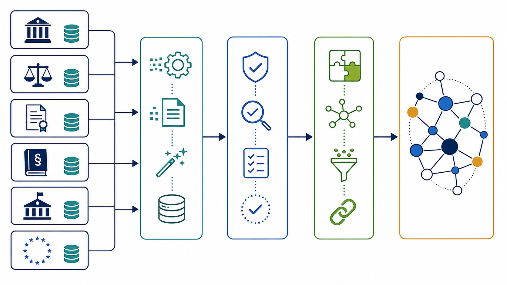
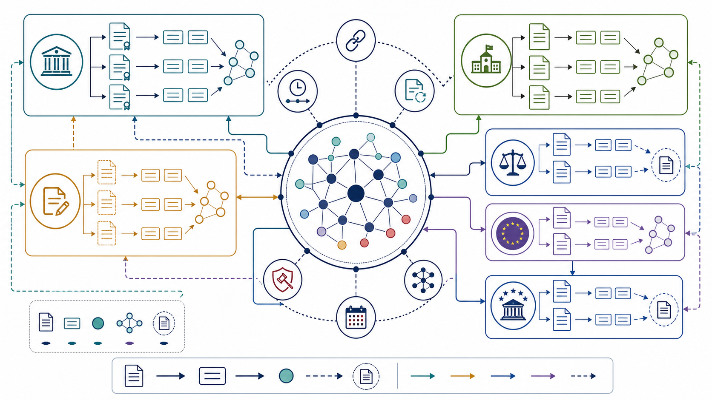

Eesti õigusontoloogia ülevaade
See dokument selgitab, mis on selles repos olev Eesti õigusontoloogia, millistest avalikest andmeallikatest see koosneb, kuidas andmeid uuendada, kuidas ontoloogia sisemine struktuur töötab ning milliseid praktilisi kasutusjuhte see avab ministeeriumidele.
1. Mis See On?
Eesti õigusontoloogia on masinloetav teadmusgraaf, mis kirjeldab Eesti ja Euroopa Liidu õigusruumi JSON-LD vormingus. Praktiliselt tähendab see, et seadused, määrused, paragrahvid, eelnõud, kohtuotsused, EL õigusaktid, mõisted, sanktsioonid, pädevad asutused ja ristviited ei ole ainult tekstifailid, vaid omavahel seostatud objektid.
Ontoloogia keskne mõte on muuta õigus masinale päringutavaks. Kui tavalises dokumendikogus saab otsida sõnu, siis siin saab küsida seoseid: millised sätted viitavad konkreetsele paragrahvile, milline eelnõu mõjutab olemasolevat seadust, millised Riigikohtu lahendid tõlgendavad teatud normi, millised EL direktiivid on Eesti õigusesse üle võetud või millised KOV määrused on sama sisulise teemaga seotud.
2. Mida Sellega Teha Saab?
Õigusinfo semantiline otsing
Laadi JSON-LD failid RDF graafi ja tee SPARQL päringuid sätete, aktide, kohtulahendite, EL direktiivide ja mõistete kohta.
Ristviidete jälgimine
Tuvasta, milline säte viitab millisele teisele sättele, millised normid sõltuvad samast volitusnormist ja kuhu mõju kandub.
Eelnõude mõjukaart
Seo EIS eelnõud kehtivate õigusaktidega ning leia, milliseid seadusi või sätteid pooleliolevad muudatused puudutavad.
Kohtupraktika ühendamine normidega
Riigikohtu lahendid on seotud seaduste ja osaliselt ka konkreetsete sätetega, mis võimaldab leida normi tõlgendava praktika.
EL õiguse jälgitavus
EUR-Lexi aktid, direktiivid, CELEX/ELI tunnused ja ülevõtuseosed aitavad jälgida Eesti õiguse seost EL õigusraamiga.
Analüütika ja kvaliteedikontroll
Deontiline klassifikatsioon, sanktsioonide indeks, pädevuskaardistus, ajaline kehtivus ja sarnasusseosed annavad aluse audititeks.
3. Kust Info Pärineb Ja Kuidas Seda Uuendada?
Põhiandmed tulevad avalikest õigusinfoallikatest. Lisaks kasutatakse kohalikke abiregistreid ja kureeritud sõnastikke, et lahendada lühendeid, KOV väljaandjaid, haldusreformi järgseid järglusseoseid ja kontrollitud teemasõnastikke.
| Allikas | Mida kasutatakse | Tehniline ligipääs / failid | Uuendamine |
|---|---|---|---|
| Riigi Teataja | Kehtivad seadused ja nende XML tekstid. | https://www.riigiteataja.ee/api/oigusakt_otsing/1/otsi?leht=N&dokument=seadus, https://www.riigiteataja.ee/akt/GLOBALID.xml |
python3 scripts/generate_all_laws.py --refresh --kehtiv YYYY-MM-DD |
| Riigi Teataja | Riigi ja KOV määrused, volitusnormide preambulid, paragrahvid, lisad ja metaandmed. | .../otsi?leht=N&dokument=määrus, sama XML skeem; KOV väljundid krr_outputs/regulations/kov/ |
python3 scripts/generate_regulations.py --refresh --kehtiv YYYY-MM-DD; KOV jaoks lisa --kov |
| EIS ehk eelnõude infosüsteem | Eelnõud faaside kaupa: avalik konsultatsioon, kooskõlastamine, Vabariigi Valitsusele esitamine. | publicConsult.rss, review.rss, submission.rss aadressil https://eelnoud.valitsus.ee |
python3 scripts/generate_draft_legislation.py |
| RIK / Riigikohus | Riigikohtu lahendite loend, aastad, asjanumbrid, lahendi liigid, lingid ja kokkuvõtted. | https://rikos.rik.ee/?aasta=YYYY&pageSize=100&lk=N, https://www.riigikohus.ee/et/lahendid/?asjaNr=CASE_NR |
python3 scripts/generate_court_decisions.py |
| EUR-Lex / Publications Office | EL määrused, direktiivid ja otsused eesti keeles; CELEX, ELI, jõusolek ja EL institutsioonid. | https://publications.europa.eu/webapi/rdf/sparql, EUR-Lexi CELEX lehed |
python3 scripts/generate_eu_legislation.py |
| EUR-Lex / CURIA | EL kohtulahendid: Euroopa Kohtu, Üldkohtu ja Avaliku Teenistuse Kohtu lahendid, ECLI ja CELEX tunnused. | Sama SPARQL endpoint; CURIA/EUR-Lexi kohtulahendi kirjed. | python3 scripts/generate_eu_court_decisions.py |
| EuroVoc | EL standardne teemaklassifikaator; ontoloogias dcterms:subject akti tasemel. |
http://eurovoc.europa.eu/... URI-d ja Publications Office kontrollsõnastikud. |
python3 scripts/classify_eurovoc.py; klassifikaator on praegu kvaliteediraportiga heuristiline kiht. |
| EHAK / Statistikaamet | 79 praegust KOV üksust, EHAK koodid ja maakonnad. | data/ehak/municipalities.json; JSON-LD väljund krr_outputs/municipalities_peep.json |
Uuenda alusfaili ja käivita python3 scripts/enrich_kov_layer1.py |
| 2017 haldusreformi järglusseosed | Ajalooliste KOV väljaandjate sidumine praeguste omavalitsustega. | data/ehak/issuer_successor_map.csv, tõendites Wikidata ja Riigi Teataja viide RT I 21.06.2017 1 |
python3 scripts/build_kov_registry.py, seejärel python3 scripts/enrich_kov_layer1.py |
| Kohalikud kureeritud sõnastikud | Seaduste lühendid, genitiivivormid, URI migratsioonid ja generaatorite ühine JSON-LD kontekst. | data/law_abbreviations.json, scripts/estleg_common.py, data/uri_migration_report.json |
Uuenda sõnastikku, käivita vastavad rikastuskihid ja valideeri kogu korpus. |
Soovitatav täisuuenduse järjestus
2026-05-01, et väljund oleks korratav.run_all_integration.py --validate-each, mis hoiab sõltuvused järjekorras.validate_all.py; uuenda metadata.jsonld.# Näidiskäsud täisuuenduseks
python3 scripts/generate_all_laws.py --refresh --kehtiv 2026-05-01
python3 scripts/generate_regulations.py --refresh --kehtiv 2026-05-01
python3 scripts/generate_regulations.py --refresh --kehtiv 2026-05-01 --kov
python3 scripts/generate_draft_legislation.py
python3 scripts/generate_court_decisions.py
python3 scripts/generate_eu_legislation.py
python3 scripts/generate_eu_court_decisions.py
python3 scripts/build_kov_registry.py
python3 scripts/enrich_kov_layer1.py
python3 scripts/run_all_integration.py --validate-each
python3 -m pytest -q
python3 scripts/validate_all.py4. Ontoloogia Struktuur Ja Toimimine
Kõik põhiobjektid paiknevad @graph massiivides ning kasutavad ühist @context plokki.
Põhinimeruum on estleg:. Akti tasemel objektid kirjeldavad tervikakti; sätte tasemel objektid
kirjeldavad paragrahve või määruse paragrahve; rikastuskihid lisavad nende vahele uued objekt- ja andmeomadused.
Akti ja sätte mudel
estleg:Acton ülene klass Eesti kehtestatud õigusaktidele.estleg:Lawtähistab seadusi; seadusefailides on akti sõlm ja selle sätete sõlmed.estleg:NationalRegulationtähistab Eesti määruseid; alamklassid onGovernmentRegulation,MinisterialRegulationjaMunicipalRegulation.estleg:LegalProvisiontähistab sätteid; KOV määruse sätted saavad lisaks tüübiestleg:KovProvision.- Aktidel on allika- ja pealkirjaprovenants:
dcterms:source,dcterms:title,owl:sameAs.
KOV erikiht
estleg:Municipalityesindab praegust KOV territoriaalüksust, IRI mustrigaMunicipality_EHAK_0000.estleg:Issueresindab volikogu või valitsust ja onInstitutionalamklass.- KOV akt kannab seoseid
enactedBy,enactedByMunicipalityjatitleNormalized. - KOV sisemised viited lahendatakse omavalitsuse kontekstis, et sama numbriga määrused eri valdades ei seguneks.
Põhiseosed
| Seos / omadus | Kust kuhu | Milleks seda kasutatakse |
|---|---|---|
estleg:references / referencedBy |
Säte → säte või akt; pöördseos tagasi. | Õigusaktide ristviidete ja sõltuvuste analüüs. |
estleg:issuedUnder / implementedBy |
Määrus → volitusakt; volitusakt → rakendusmäärused. | Volitusnormide ja rakendusaktide jälgimine. |
estleg:interpretsLaw / interpretedBy |
Kohtulahend → säte või KOV akt; pöördseos normi juures. | Kohtupraktika sidumine normidega. |
estleg:transposesDirective / transposedBy |
Eesti säte või akt → EL direktiiv; EL direktiiv → Eesti ülevõtja. | EL õiguse ülevõtu ja harmoneerimise jälgitavus. |
dcterms:subject |
Akt → EuroVoc teema IRI. | Valdkonnapõhine otsing ja portfellivaade. |
estleg:normativeType |
Säte → kohustus, õigus, luba või keeld. | Normatiivse koormuse ja õiguste-kohustuste analüüs. |
estleg:competentAuthority |
Säte → pädev asutus või KOV väljaandja. | Järelevalve-, loa-, menetlus- ja rakendusvastutuse kaardistamine. |
estleg:hasSanction |
Säte → sanktsiooni sõlm. | Trahvide, karistuste ja sunniraha leidmine ning võrdlemine. |
estleg:entryIntoForce, repealDate, temporalStatus |
Akt → kuupäevad ja kehtivusstaatus. | Ajaline filtreerimine ja snapshot'i kontroll. |
skos:exactMatch / closeMatch |
Mõiste → sama või lähedane mõiste teises aktis. | Õigusmõistete konsolideerimine ja definitsioonide audit. |
Rikastuskihid
Ontoloogia ei piirdu lähteteksti teisendamisega. 15 integratsioonikihti lisavad semantilisi seoseid: ristviited, pöördviited, kohtulahendite seosed, EL ülevõtukaardistus, EuroVoc, muudatusajalugu, õigusmõisted, eelnõude mõju, ajaline kehtivus, harmoneerimislingid, deontiline klassifikatsioon, pädevad asutused, sanktsioonid, semantiline sarnasus ja sihtrühmade klassifikatsioon.
5. Voodiagrammid: Image 2.0
Allolevad kaks voodiagrammi kasutavad Image 2.0-ga loodud pildipõhju. Täpsed eestikeelsed sildid on lisatud HTML-i eraldi kihina, et vältida pildigeneraatori tekstivigu ja säilitada PDF-is loetavus.
Voodiagramm A: andmeallikatest teadmusgraafini

generate_*.py ja KOV registridAvalikud registrid ja kontrollsõnastikud.
Python skriptid teisendavad XML/RSS/SPARQL tulemused JSON-LD-ks.
Valideerimine katkestab vigase või osalise väljalaske.
Aktid, sätted ja analüüsisõlmed on päringutavad RDF mudelina.
Voodiagramm B: ontoloogia sisemine struktuur

estleg teadmusgraafLaw, LegalProvisionNationalRegulation, Municipality, IssuerAkt → sätteklass → paragrahvisõlm.
Eelnõu, muudatus ja volitusnorm seotakse olemasoleva aktiga.
Kohtulahend viitab normile, mida ta tõlgendab.
Direktiivide ja Eesti sätete vahel tekib ülevõtu- või harmoneerimislink.
6. Tulevikuvisioon
Versioneeritud õigusajaloo mudel — juurutatud
Sätte- ja lõikepõhine redaktsioonimudel on juba juurutatud: generate_provision_versions.py tekitab 124 901 ProvisionVersion sõlme (742 seadust), nii et normi kehtivus on päringutav ajateljel, mitte ainult akti snapshot'i tasemel. Edasi saab katvust laiendada ülejäänud aktidele.
Täisteksti sügavam kasutamine
Ühtlustada kõikide sätete ja kohtulahendite täisteksti kiht, et semantilised seosed ei sõltuks kokkuvõtetest ega heuristilistest väljavõtetest.
Graafi-API ja kasutajaliides
Pakkuda SPARQL endpoint, REST/GraphQL teenus ja ametnikele mõeldud otsingu- ning mõjukaardistuse vaated.
Kvaliteedi- ja usaldusmudel
Iga automaatselt tuvastatud seose juurde lisada meetod, tõenäosus, lähtekatkend ja inimkinnituse olek.
Automaatne väljalasketsükkel
Ehitatav release-DAG võiks tuua allikad, rikastada andmed, jooksutada testid ja avaldada versioonitud andmepaketi.
Valdkonnapõhine eksperthooldus
Luua ministeeriumide ja juristide ülevaatusvoog, kus nad kinnitavad mõisteid, pädevusseoseid, EL ülevõttu ja sanktsioonide tõlgendust.
7. Kasutusjuhud Ministeeriumitele
Justiitsvaldkond: normi mõjuahel
Enne seaduse muutmist saab automaatselt näha, millised sätted viitavad muudetavale paragrahvile, millised eelnõud seda puudutavad ja milline Riigikohtu praktika on seotud.
EL asjade koordineerimine
Direktiivide ülevõtuvaade aitab leida, millised Eesti sätted on seotud konkreetse CELEX aktiga ning kus on ülevõtu või harmoneerimise lüngad.
KOV poliitika ja regionaalhaldus
KOV määruseid saab võrrelda omavalitsuste, väljaandjate ja normaliseeritud pealkirjade kaupa, näiteks jäätmehoolduseeskirjade või sotsiaaltoetuste kordade ühtlustamiseks.
Järelevalve ja pädevuste audit
Pädevuskaardistus näitab, millistele asutustele on seadustes ja määrustes pandud loa-, järelevalve-, menetlus- või täitmisülesanded.
Sanktsioonipoliitika võrdlus
Sanktsioonide indeks võimaldab võrrelda rahatrahve, sunniraha, vangistust ja muid karistusliike valdkondade või õigusaktide lõikes.
Õigusloome koormuse juhtimine
Deontiline klassifikatsioon aitab leida kohustuste, keeldude, lubade ja õiguste kontsentratsiooni, mis on kasulik halduskoormuse hindamisel.
Kriisi- ja siseturvalisuse õiguskaart
Ristviited ja pädevused aitavad koondada kriisiolukorra, politsei, pääste, andmekaitse ja kohaliku tasandi normid ühte töövaatesse.
Avaliku teenuse tervikvaade
Teenust reguleerivad seadused, määrused, KOV korrad, kohtupraktika ja EL aktid saab ühendada üheks päringuks, mitte otsida eri portaalidest käsitsi.
Valideerimine Ja Kvaliteediseis
| Mõõdik | Seis viimases raportis |
|---|---|
| Valideeritud failid | 23 113 |
| JSON/JSON-LD vead | 0 |
| Hoiatused | 0 |
| SHACL ämbrid | laws, kov, riigikohus, drafts, eurlex, curia kõik PASS |
| Sarnasuse analüüs | 84 527 sätet, 108 684 paari (seadused ja riigi määrused); KOV sarnasus on eraldi kiht, mis on juba juurutatud — 113 513 paari |
Põhikontrollid: JSON süntaks, @context, @type kuju, kuupäevad, korduvad ID-d,
sisemiste estleg: viidete lahenduvus, indeksite ja tegeliku failipuu kooskõla, allika IRI kuju,
KOV ja riigi määruste registrid ning institutsiooninimede normaliseeritud duplikaadid.
Lühikokkuvõte
Ontoloogia on Eesti õigusruumi semantiline infrastruktuur: see teisendab avalikud õigusallikad teadmussõlmedeks ja seosteks, mida saab kontrollida, uuendada ja pärida. Kõige suurem väärtus tekib seal, kus tavaline otsing ei piisa: mõjuanalüüs, normide sõltuvused, EL ülevõtt, KOV võrdlus, kohtulahendite seosed ning pädevuste ja sanktsioonide audit.
Edasi arendades peaks fookus olema täpsemal ajaloolisel redaktsioonimudelil, täisteksti põhisel semantilisel eraldusel, kvaliteediskooridel, ministeeriumidele mõeldud töövaadetel ja automaatsel versioonitud väljalaskel.